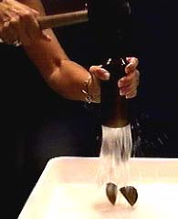

Bottle magic by Deena Hoch |
Any externally applied pressure is transmitted to all parts of the enclosed
fluid, making possible a large multiplication of force (hydraulic press principle).
One particularly useless but nonetheless interesting application of Pascal's principle is the dropping of the bottom out of a glass bottle. If the bottle is filled to the top with water, then any pressure exerted on the water is transmitted undiminished to the bottom of the bottle, which has a larger area. The multiplied force can pop the bottom out of the bottle.
|